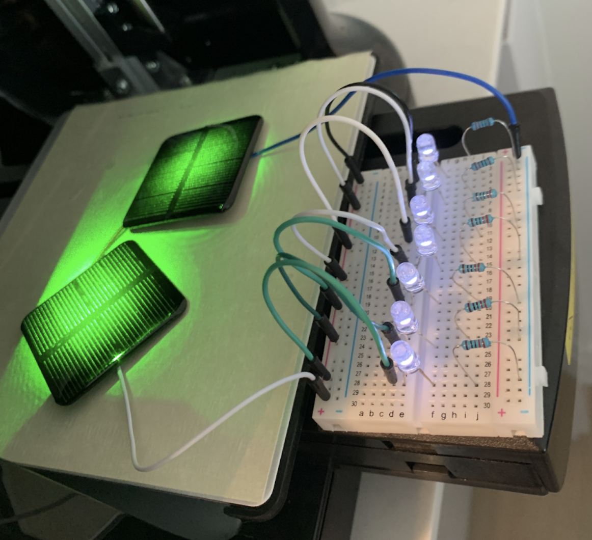

Simultaneous Wireless Information and Power Transfer
Research Paper for EC500 - March 15, 2023
Abstract
While both energy and information can be wirelessly transmitted using electromagnetic waves, the technologies for these two applications have developed independently of one another. In this paper, the feasibility and safety of multiple methods of wireless power transmission is reviewed. Then a circuit designed for Simultaneously Wireless Power and Information Transfer (SWIPT) from a laser to a photovoltaic cell is studied. Based on this research, an early prototype is designed and initial experiments are conducted. A 535 nm laser incident on silicon PV cells at over a meters distance is used to power on a set of LEDs. A program receives and decodes the laser signals in real-time at a rate of 100 bits per second (bps). To test these technologies on a real application, a mini-quadcopter has been assembled using 3D-printed components, an Arduino Nano, a perf board, and four ESC's and motors. The next step of this project is to use these modules to produce an open-source, safe, and easy-to-assemble wirelessly-powered quadcopter. This can serve as a simple demonstration of SWIPT's utility, as well as a benchmark for future approaches in which the hardware is specialized to this application.
Full Paper
This research was conducted for BU's course EC500 Plasma Science & Engineering. The complete paper includes detailed methodology, experimental results, and technical analysis.
Download Full Paper
Complete research paper with methodology and results
